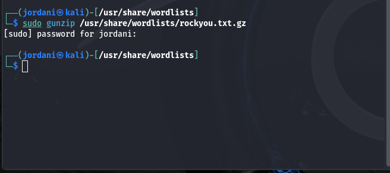

Презентация о выполнении индивидуальный проект Этап 3
Информационная безопасность
Российский университет дружбы народов, Москва, Россия
26 сентября 2024
Подготовка: Список Паролей
- Для выполнения атаки Hydra необходим список паролей:
- rockyou.txt — один из самых популярных списков паролей в Kali Linux:

- Сначала распаковал файл:

Команда Hydra для Атаки на HTTP Форму
- Для выполнения атаки на форму аутентификации DVWA использовал следующую команду:

Анализ Результатов
- После выполнения команды Hydra получим результат, который может выглядеть так:
[80][http-post-form] host: localhost login: admin password: 12345
[STATUS] attack finished for localhost (valid pair found)
Проверка Найденного Пароля
Чтобы убедиться, что найденная комбинация действительно работает, выполнил следующие действия:
Ручная проверка:
- Открыл браузер и перешёл на страницу входа в DVWA: http://localhost/DVWA/login.php.
- Ввел имя пользователя admin и пароль 12345.
- Если вход выполнен успешно, это подтверждает, что Hydra нашла правильный пароль.


- Проверка с помощью curl:
- Можно тоже использовать команду curl, чтобы проверить результаты в терминале
curl -X POST -d "username=admin&password=12345&Login=Login" http://localhost/DVWA/login.php -v

- Команда -v покажет ответ сервера, что поможет подтвердить успешность аутентификации.